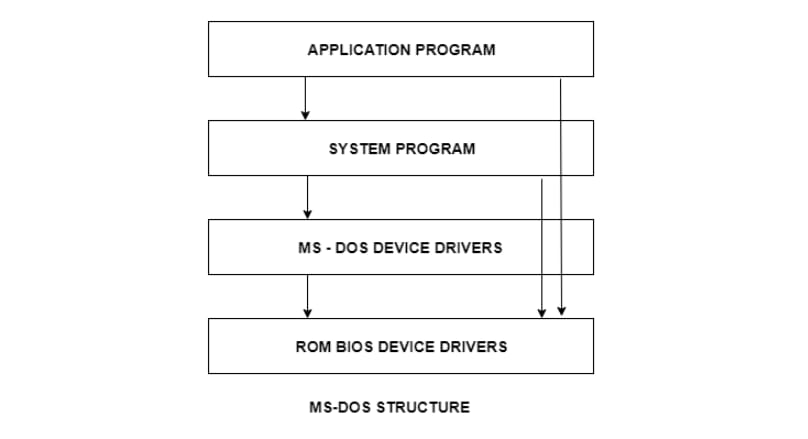

operating system architecture
Links:

An operating system is a construct that allows the user application programs to interact with the system hardware. Since the operating system is such a complex structure, it should be created with utmost care so it can be used and modified easily. An easy way to do this is to create the operating system in parts. Each of these parts should be well defined with clear inputs, outputs and functions.Simple Structure
There are many operating systems that have a rather simple structure. These started as small systems and rapidly expanded much further than their scope. A common example of this is MS-DOS. It was designed simply for a niche amount for people. There was no indication that it would become so popular.It is better that operating systems have a modular structure, unlike MS-DOS. That would lead to greater control over the computer system and its various applications. The modular structure would also allow the programmers to hide information as required and implement internal routines as they see fit without changing the outer specifications.
Layered Structure
One way to achieve modularity in the operating system is the layered approach. In this, the bottom layer is the hardware and the topmost layer is the user interface.
Layered Structure of Operating System
As seen from the image, each upper layer is built on the bottom layer. All the layers hide some structures, operations etc from their upper layers.One problem with the layered structure is that each layer needs to be carefully defined. This is necessary because the upper layers can only use the functionalities of the layers below them